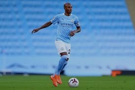

MANCHESTER CITY HISTORY
Manchester City Fc is an English football club located in Manchester and it competes in English premier league(EPL), the top most
competitive league in England. The club was founded in 1880 as St. Mark's(West Gorton), it became Ardwick Association Fc in
1887 and later adopted the name Manchester City in 1894.The club's home ground stadium is the Etihad Stadium in east Manchester,
to which it moved in 2003, after playing at Maine Road since 1923. The club's sky blue home kits were adopted in the year 1894 and
have been used upto date. They are currently ranked 6th in the all-time English top flight table since its creation therefore making it
one of the country's most successful football clubs.
ManCity won the First Division title for the first time in 1937, but was relegated the
following season despite scoring more goals than any other team in the division
Manchester City entered the football league in 1892 and
won their first major honor with the FA Cup in 1904.
The Cityzens enjoyed their first period of success during the late 1960s with the club winning major trophies like:
- The League Cup
- European Cup Winners Cup
- FA cup
The above trophies were won under the management of Joe Mercer and Malcom Allison.
The club went thorugh a rough time after losing the FA Cup in 1981 and even being relegated to the third tier of the English football for the
only time in its history in 1998. They regained promotion to the top-tier in 2001-02 and have remained in the premier league since 2002-03.
NOTE:During the 1934 cup run, Manchester City broke the record for the highest home attendace of any club
in English footbal history as 84,569 fans packed the Maine Road(City's previous stadium) for a sixth round of
FA Cup tie against Stoke City in 1934- a record which stood until 2016.
| Full Name |
Manchester City Football Club(s) |
| Nickname(s) |
City,The Cityzens, The Sky Blues |
| Short Name |
City, Man City |
| Founded |
16 April 1942; 127 years ago as Manchester City
1887; 135years ago as Ardwick Association Fc
1880; 142years ago as St. Mark's(West Gorton) |
| Stadium |
Etihad Stadium |
| Capacity |
53,400 |
| Manager |
Pep Guardiola |
| League |
Premier League |
| 2020-21 |
Premier League, 1st of 20(Champions) |
- Record League Victory: 11-3 vs Lincoln City(23 March 1895, Most goal Scored)
10-0 vs Darwen(18 Feb 1899)
- Record FA Cup victory:12-0 vs Liverpool Stanley(4 October 1890)
- Record European Victory: 7-0 vs Schalke 04, UEFA Champions League Round of 16 2nd Leg(12 March 2019)
- Most goals scored overall: 260 Sergio Kun Aguero 2011-21
- Record transfer fee paid:£100 million to Aston Villa forJack Grealish, August 2021.
Niall Quinn made 244 appearances for Mancity
between 1990 and 1996, scoring a total of 77
goals. He was voted Player of the Year in 1991
and is in both the National Hall of Fame and the
Club's own Hall of Fame.
- Record transfer fee received:
£54.8million fromBayern Munich for Leroy Sane, July 2020
- Record League Defeat: 0-8 vs Burton Wanderers(26 Dec 1894)
- Record FA Cup defeat: 0-6 vs Preston North End(30 Jan 1897)
Bradford Park Avenue(30 Jan 1946)
- Record European defeat: 0-4 vs BarcelonaUEFA Champions League Group Stage, 19 Oct 2016
P.S: THIS IS JUST A BRIEF HISTORY OF THE CLUB FOR MORE INFO PLEASE VISIT Wikipedia.org